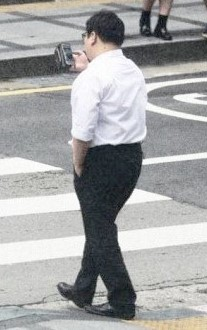
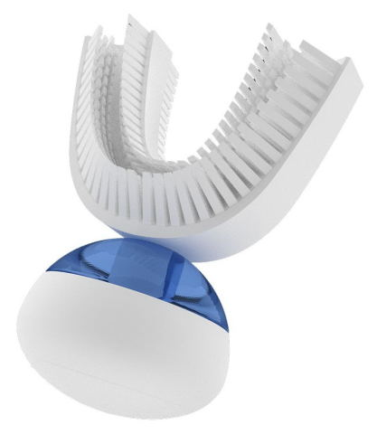

|
 previous / next column previous / next column
A PHYSICIST WRITES . . .
(October 2017)
All eyes ought to be on the city of Honolulu near the end of this month, when a new regulation comes into force there: the Distracted Walking Law. Pedestrians seen crossing the road while gazing at a hand-held screen will be fined $15 minimum, rising possibly to $99 for repeat offenders. The aim is to cut the number of injuries resulting from this habit, which is put at more than 1000 a year within the United States.
Well, that should work well - just like our own laws do, forbidding phone-distracted driving! I suppose the next target will be distracted cyclists (who of course have the added problem of keeping their balance).

It depresses me to see people, especially the young, glued to their phones when out of doors, and quite oblivious to the world around them. Sadder still is when they have headphones on while striding out, and so are unable to hear birdsong or anything else. But here's what really puzzles me about smartphones and the like: they cost hundreds of pounds, and yet they appear not to be supplied with any means of attaching them to your hand, to prevent their being dropped or snatched. It's madness.
As I said at the start of last month's column, for some reason this summer has brought a flood of interesting news stories to my attention - interesting to me as a motorist, as a physicist, and as the owner of a body that's beginning to deteriorate with age! I've read about several devices that could come to my aid in this last predicament.
Let me first describe one that's designed really to assist construction workers when lifting heavy tools such as industrial drills: the EksoVest (from the USA) straps on to the upper body, and supports the arms with spring-loading to give them all the strength needed for the job. The technical name for this type of kit is an exoskeleton.
The news report that I was reading claimed that in the UK 700,000 bricklayers are expected to retire over the next ten years, and also that 15% of building sites rely on workers from E Europe, who are likely to exit with Brexit. The implication was that by investing (sorry) in these expensive vests, the construction industry will be able to attract enough less-muscular Brits to save it from collapse. However, I detect a flaw in the plan: the EksoVest does not extend to the hands. After heavy lifting these feel the pain too, if mine are anything to go by. So if you haven't got a strong handshake, do not apply!
The above attachment is entirely mechanical, but other systems being developed to assist the body are electronic, programmable and more lightweight. I'm now looking at a description of a strap-on aid for stroke victims who have weakness in one leg: as soon as muscle movement (for taking a stride) is detected, just the right amount of support is given to the foot for the patient to achieve balanced walking. It's a clever idea, and I would guess that other parts of the body can be similarly aided too. Though (fingers crossed) I hope I won't have a need for this kind of assistance.
But I would be interested in trying a special staircase (also being worked on in the US) in which each stair sinks slightly as you tread on it descending - and lifts you up again later when you step on it ascending! This is conservation of energy, in a small way, and it's recommended for those with stiff knee-joints. However, again I can see a flaw: if there are two of you in the house, the stairs will often be 'primed' the wrong way for whoever is using them - thus making both going up and coming down more tiring, rather than less! And probably more hazardous...
Dental news: how long would you guess is spent brushing one's teeth during a lifetime? Even if you take only a minute or so morning and night (compared with the several minutes recommended), over 70 years this adds up to 35 whole days. Well, you could have saved 30 of them by buying the Amabrush in the picture below (except that it hasn't been launched yet). This extraordinary appliance slots into your mouth and cleans all teeth simultaneously, in ten seconds!

Hang on - there's an obvious drawback, surely: it must take at least a minute to clean the thing properly afterwards. So let's forget that, and welcome instead a report from the University of Plymouth, which equipped a dentist's surgery with a virtual-reality headset and then, in a randomized trial, gave patients (during their treatment) either a self-guided virtual walk on a Devon beach, or the same around an anonymous city, or nothing (ie, no headset).
Not surprisingly perhaps, those who 'toured' the beach were more relaxed in the dentist's chair, they experienced less pain, and afterwards they had better memories of the appointment. In contrast, the sights of the city gave no benefit at all (compared with simply staring at the surgery ceiling).
Actually, this sort of thing has been successfully tried before, with headsets and with big screens. But doesn't it suggest a much easier way for most people to make their dental treatment more enjoyable: take your smartphone or pad, ask the dentist to prop it up above somehow, and then watch whatever gives you pleasure! Me, though, I'm quite happy with the classical music that my dentist provides.
I confess I've been putting off trying even to summarize the recent news relating to two big topics, namely electric vehicles and self-driving/autonomous/driverless ones (which I still say should be called just autos for simplicity). There are so many aspects to consider: electrics are simpler to build than petrol-driven cars, and far cheaper per mile, but will battery and charging technology ever be able to provide comparable convenience in refueling? And how will the shortfall in fuel and vehicle tax be made up?
As for autos, maybe an 'expert comment' in the current issue of RoadSmart (the IAM magazine) says it all: "The car of the future will simply stop, if it can't work out what's happening." Last year, I recall, a big moth was reported to have disabled the self-drive system of a Tesla Model S, by colliding with one of its radar sensors! I ask you, what are the chances that autos will ever complete a journey of useful length without hesitation, deviation, or (quite possibly) repetition of a section of it if the system didn't get it right the first time? Not high, I think.
Enough of all this technology: I need to take a walk. With luck (allowing for my deteriorating high-frequency hearing) I'll catch some birdsong...
Peter Soul
previous / next column
|